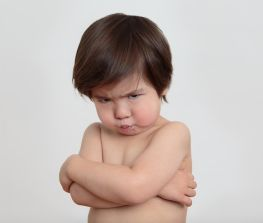

I. Оцените высказывание

Вам будет предложен тест, который поможет определить наиболее подходящие Вам профессии. Оценивайте утверждения искренне и честно - тогда показанный результат будет наиболее объективным.
I. Оцените высказывание | ||
|
 | |
ДА, ЭТО МОЁ |
НУ, НЕ ЗНАЮ... |
НЕТ, НЕ ПРО МЕНЯ! |